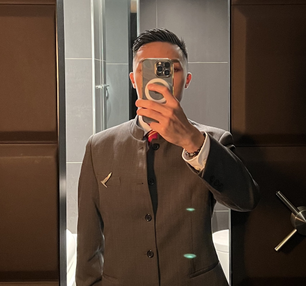

I am a student of Bachelor of Science in Creative Media. I am diligent and enthusiastic about movies and designs. Hence, I have been practicing my drawing and editing techniques for over 6 years. I am now studying a relevant degree programme that enables me to further enhance my skills and qualifications.
